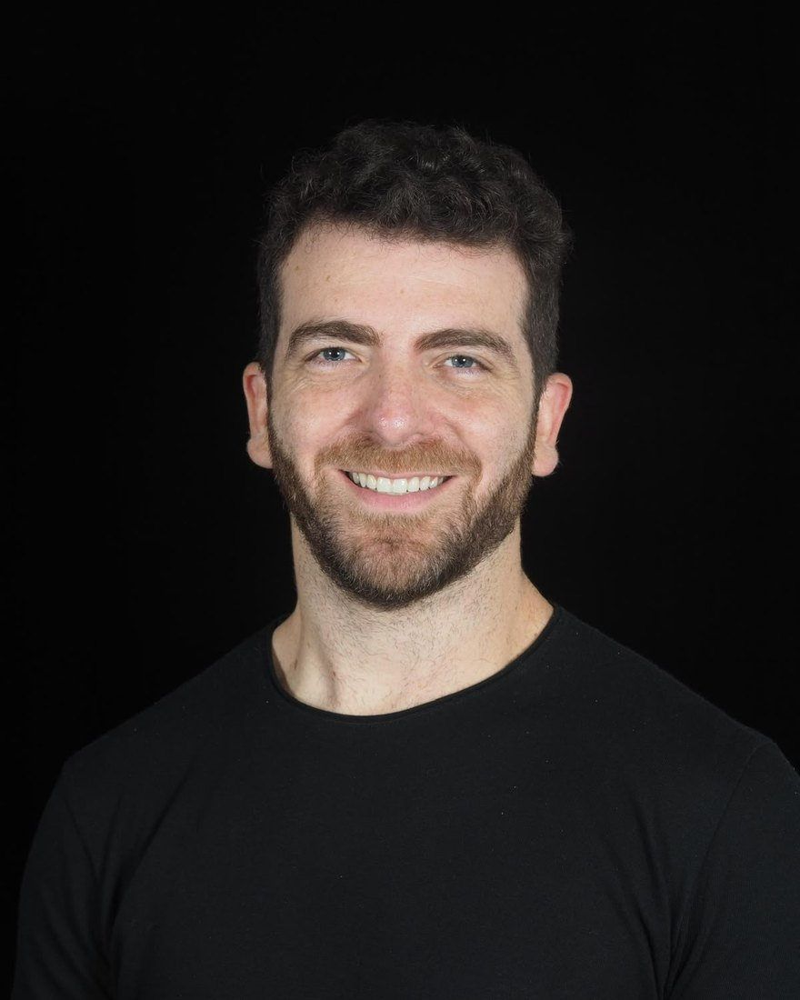
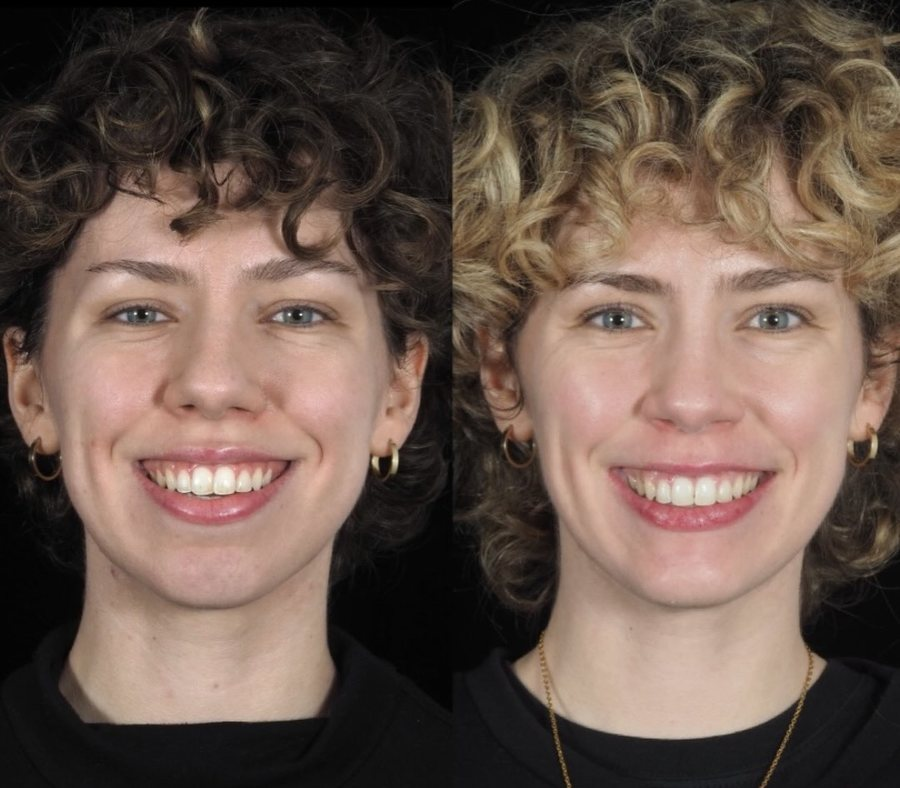
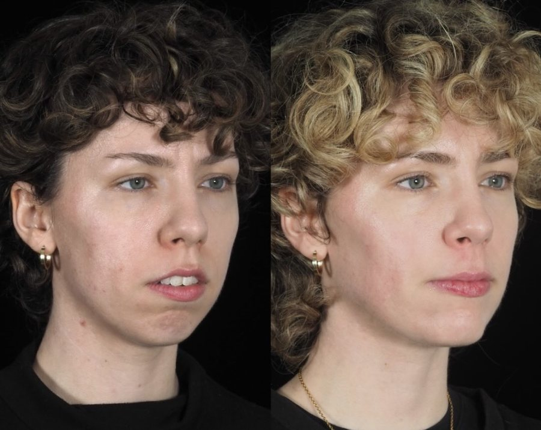
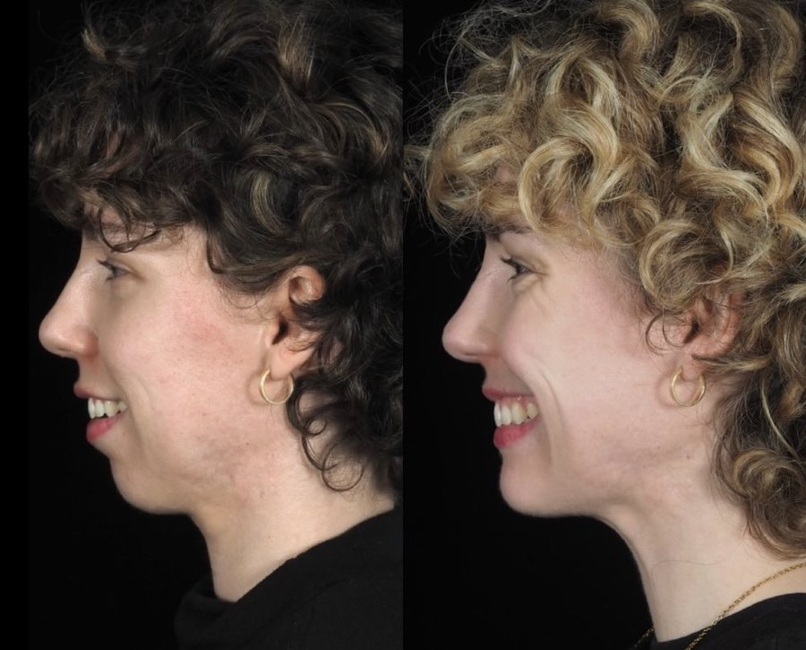
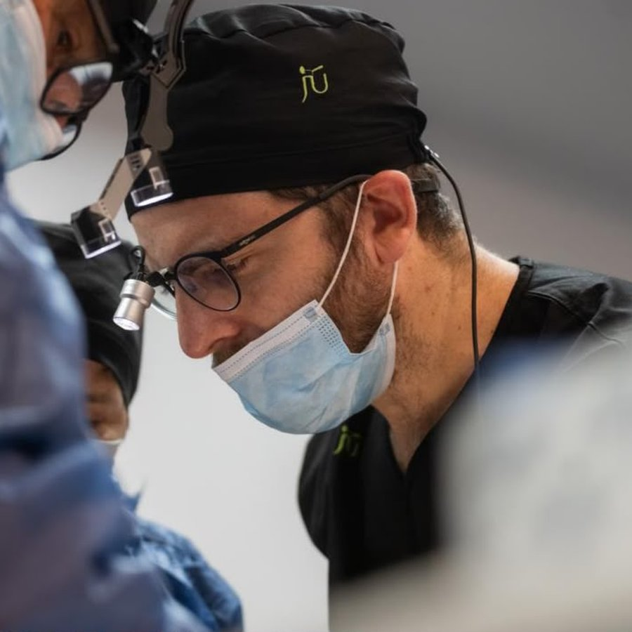

Buenos Aires · Argentina
Cirugía
maxilofacial
de precisión.
Diagnóstico claro, plan a medida y acompañamiento en cada etapa.
- UBADocente
- Hospital MilsteinResidencia
- Buenos AiresAtención presencial

Tratamientos
Qué resolvemos
Tocá el tratamiento y escribime directo por WhatsApp.
Cirugía Ortognática
Corrección de mordida y armonía facial.
Implantes Dentales
Rehabilitación con implantes e injertos.
Terceros Molares
Muelas de juicio retenidas o incluidas.
Trauma Facial
Fracturas mandibulares y maxilares.
ATM
Dolor o chasquido en la articulación.
Patología Bucal
Quistes, tumores y biopsias.
- OSDE
- Swiss Medical
- Galeno
- Medifé
- OMINT
- Sancor Salud
- Avalian
Consultá tu plan por WhatsApp.
Casos
Antes y después
Cirugía ortognática · publicado con consentimiento de la paciente.



Antes DespuésMás casos en @urielgrumberg

Perfil
Formación quirúrgica y docencia.
Especialista en cirugía maxilofacial. Residencia completa en el Hospital Milstein y docencia en la Universidad de Buenos Aires.
Hablemos por WhatsAppPreguntas
Lo que más consultan
¿Cómo saco turno?
Por WhatsApp. Me escribís, coordinamos día y horario, y te confirmo la dirección.
¿Trabajás con obras sociales?
Trabajo con OSDE, Swiss Medical, Galeno, Medifé, OMINT, Sancor Salud y Avalian, entre otras. La cobertura depende del plan y del procedimiento: escribime y te lo confirmo.
¿Qué llevo a la primera consulta?
Estudios previos si los tenés: panorámica, tomografía o resonancia. Si no, los indico ahí.
¿Cuánto dura la recuperación?
Varía según la cirugía. En la consulta te doy tiempos reales y las indicaciones del posoperatorio.
Turnos
Agendá tu consulta
Respondo personalmente por WhatsApp.
- 1 Me escribís
- 2 Consulta y diagnóstico
- 3 Plan y tratamiento
- Buenos Aires, Argentina
- Lunes a viernes · 9 a 19 h
- @urielgrumberg